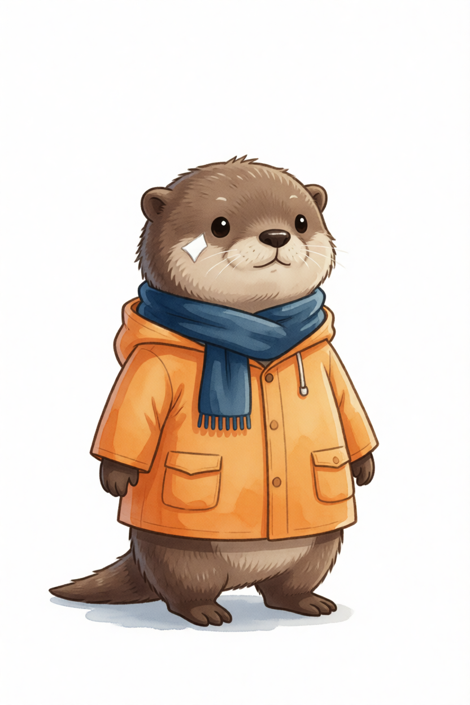
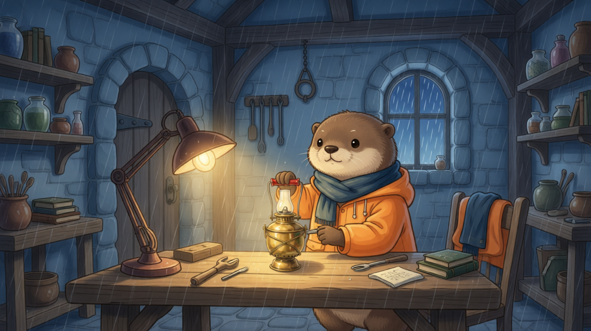
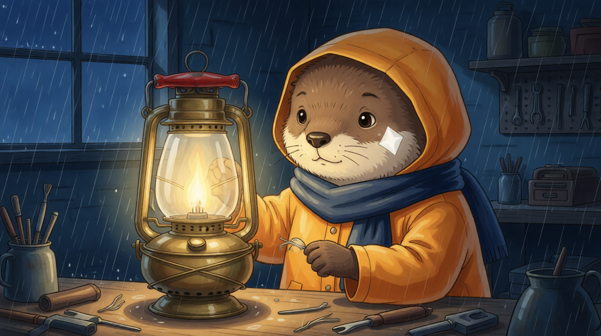
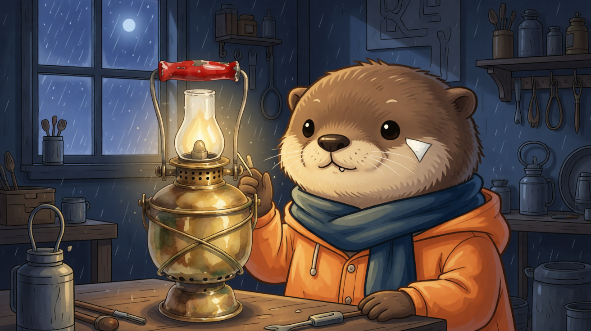
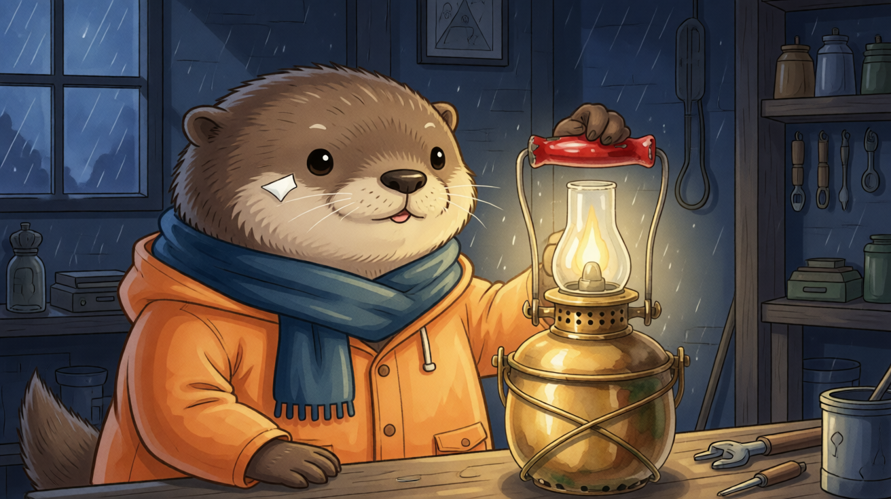

Phase 42 探针预览（2026-09-29）
42.md 视频Skill底层封板验收 · 全部素材同目录相对路径 · 《雨灯归航》
背景一句话：画风漂移根因 = 特写镜自动丢角色设定图（Look）→ 模型纯文本重造角色 → 尾帧接力链逐镜传播偏差风格。
下面对照里：水彩/贴Look=批准设定风格，厚涂卡通/偏差=偏差组风格。
① 根因对照（静态图）
批准的 Look（角色设定图，唯一身份权威）

贴定义组s02_c01 首帧（发过 Look，水彩延续）

偏差组根s02_c02 首帧（Look 被丢，纯文本重造：厚涂/兜帽向上/白斑错侧）

s02_c02 尾帧（偏差风格从这里沿接力链传播到 s02_c03→s03 全部）
② P1 · Look+尾帧双参考 relay 探针（核心对照）
问题：偏差已经传到 s02_c03，还能拉回来吗？做法：s02_c03 视频生成时同时发【上一镜尾帧（衔接）+ 角色 Look（身份/画风再锚定）】两张参考图。左边是现役版本（只发尾帧），右边是双参考探针——注意右版中后段画风明显向水彩/Look 回正，空间叙事（修理间→开门→望塔）保持正确。
现役 s02_c03（只发尾帧 → 偏差风格）
首中尾帧：

P1 探针版（尾帧+Look 双参考）
首中尾帧：
③ P2 · keyframes 桥解锁探针（首尾双帧钉死）
桥 = 两端都钉死（首帧=尾帧图 A，尾帧=尾帧图 B），中间由模型过渡。实测 2.5 接受双帧且两端逐像素级对齐——桥路径恢复可用（此前被 client 拒绝）。
桥探针（首=修理间正脸，尾=开门望塔）
首/中/尾：
④ P3 · 特写镜三臂对照（静态图，偏差根的修复方向）
s02_c02 是偏差根（特写镜丢 Look）。三臂同镜同 prompt，只变「发不发参考、发哪种参考」：A 现状丢（=上面①里的偏差根图）/ B 头肩裁剪 Look / C 全幅 Look。
B 头肩裁剪构图✓ 身份部分回正

C 全幅身份最准（白斑侧✓兜帽✓水彩✓）构图被拉宽

⑤ P4 · 真解除接力+独立重生探针
完全不带上一镜尾帧、独立生成首帧（完整锚定）再生成视频：画风/身份三探针最优（水彩/白斑正确侧/兜帽向下），但空间错——跑到了室外平台（缺「灯室内部」场景图，模型自由度过大）。
⑥ 附：现役 s02_c02（偏差根成片）
端点三修法实证矩阵（错误端点怎么修）：
① 文本强化+保留接力：空间✓ 画风✗（Phase 41 已用）｜
② 双参考（接力+Look）：空间✓ 画风中气回正 ← 综合最优（P1）｜
③ 真解除+独立重生：画风✓ 空间✗（P4，需先补灯室内部场景图）｜
④ 桥（双端钉住）：本轮解锁（P2）